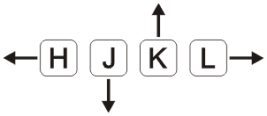

Tu nuevo viejo amigo
Objetivo:
Utilizarlo en el trabajo
Temario
- Introducción 5'
- Preguntas frecuentes 5'
- Aprender haciendo 20~30'
Introducción
Dile adiós a la máquina de escribir
Y al mouse
Y a tu paciencia
Pero puedo..?
Sí, sí podés hacer...
Advertencia
Preguntas frecuentes
Sí.
¿Es difícil en relación a otros editores?
¿Viene para Linux, Windows, McOS?
¿Autocompleta?
¿Tiene consola?
¿Es libre?
¿Soporta plugins?
¿Cómo salgo de acá?
ESC :q!
¿Por qué lo debo usar?
- Editamos casi el doble de lo que programamos
- No quitamos las manos del teclado
- Shortcuts mnemónicos
- No dependemos del editor
- Ya lo tenemos instalado
- Es necesario
Aprender haciendo
No utilizarlo en el trabajo
Modos
- Normal
- Insert
- Visual
- Command
¿Cómo usarlo en mi editor?
(casi) Todos los IDEs y editores de texto soportan el modo Vim
¿En dónde está instalado?
Si usamos Git:$vim --version | grep vimrcNos dirá dónde está instalado y sus archivos de configuración
system vimrc file: "/etc/vimrc"
user vimrc file: "$HOME/.vimrc"
2nd user vimrc file: "~/.vim/vimrc"
user exrc file: "$HOME/.exrc"
defaults file: "$VIMRUNTIME/defaults.vim"
fall-back for $VIM: "/etc"
f-b for $VIMRUNTIME: "/usr/share/vim/vim80"Puesta a punto
Debemos editar un poco el archivovimrc
behave mswin " comportamiento Windows
set mouse=a " usar el mouse a -> all
set noswapfile " evitamos archivos swap
set nowb " idem
set nobackup " idem
set autoread " carga modificaciones
set autochdir " cd a la carpeta que abrimos el archivo
set ts=4 " tab de cuatro espacios
set shiftwidth=4 " salto con identación
set smarttab " sabe cuándo insertar tab o spaces
set ai " auto-indenting para programar
set showmatch " muestra los brackets coincidentes
set vb " cambia el bell
set ruler " muestra la regla de estado
set backspace=indent,eol,start " hace que el backspace haga lo conocido
set background=dark " color oscuro para modo consola
set showmode " muestra el modo actual
set clipboard=unnamed " da acceso al portapapeles de Windows
syntax on " ilumina la sintaxisLo más básico
10 cosas que necesitas saber de Vim1. Salir
ESC :q!
2. Guardar
ESC :w
3. Abrir
ESC :e [nombre_archivo]
4. Deshacer
ESC u
5. Rehacer
ESC Ctrl-r
6. Ordenar - identar
ESC = =
7. Borrar (cortar)
ESC d + movimiento dw, dd, dG, dgg, ...
8. Seleccionar
ESC v + movimiento vw, vd, vG, vj, vk, ...
9. Copiar
y
10. Pegar
ESC p
Modo Command - Normal

Movimientos (I)
Movimientos (II)
w - (word) adelante de a una palabra
W - (Word) adelante de a una PALABRA definida con espacio
b - (back) retrocede de a una palabra
B - (Back) retrocede de a una PALABRA
e - (end) adelante hacia el final de una palabra
E - (End) adelante hacia el final de una PALABRAMovimientos (III)
$ - mueve el cursor al final de la línea
0 - mueve el curso al principio de la línea
G - va al final del archivo
gg - al principio del archivo
{ - salta a la línea en blanco anterior, párrafo
} - salta a la línea en blanco posterior
M - lleva el cursor a la mitad de la pantalla
:[num] - lleva el cursor al principio de la línea indicada
zz - centra la pantalla al cursor
Comandos de inserción
Cambian el estadonormal mode -> insert mode
i - (insert) mode
I - (insert) mode al final de la línea
s - (subtle) borra el caracter debajo del cursor -> insert mode
S - (Subtle) borra la línea -> insert mode
a - (append) insert mode inmeditamente después del cursor
A - (Append) igual que a pero al final de la línea
o - (open) insert mode abriendo una línea debajo
O - (Open) insert mode abriendo una línea arriba
C - (cut off) borra hasta el final de la línea luego insert mode
. - repite la última operaciónCopy/Paste
y - (yank) copia: yw (yank word)
p - (paste) pega después del cursor
P - (Paste) pega antes del cursorComandos avanzados
Buscar
/[text] - busca hacia adelante
n - (next) y N (before next)
?[text] - busca hacia atrás
Editar entre
ci( - (change) (inside) (
ci" - (change) (inside) "
Buscar y reemplazar
Busca [text] reemplaza con [replacement] pero congc
:%s/text/replacement/gc - pregunta antes de reemplazarAbreviación
:ab rlw ReallyLongWord
escribir rlw y luego tab reemplazará por ReallyLongWord
Guardar y salir
ZZ